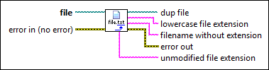
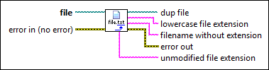

Get File Extension VI
Owning Palette: Advanced File VIs and Functions
Requires: Base Development System
Returns the file extension, without the period (.), of a file you specify.

 Add to the block diagram Add to the block diagram |
 Find on the palette Find on the palette |
Owning Palette: Advanced File VIs and Functions
Requires: Base Development System
Returns the file extension, without the period (.), of a file you specify.

| Add to the block diagram |
Find on the palette |
 |
file specifies the path to the file whose extension you want LabVIEW to return. |
 |
error in describes error conditions that occur before this node runs. This input provides standard error in functionality. |
 |
dup file returns file unchanged. |
 |
lowercase file extension returns the extension of the file, without the period (.). LabVIEW always returns a lowercase file extension, even if file contains uppercase letters. |
|
filename without extension returns the name of the file you specify in file without the directory path, period (.), or file extension. Unlike lowercase file extension, filename without extension matches the case of the original filename. |
 |
error out contains error information. This output provides standard error out functionality. |
|
unmodified file extension returns the extension of the file you specify in file, without the period (.). Unlike lowercase file extension, unmodified file extension matches the case of the original file extension. |